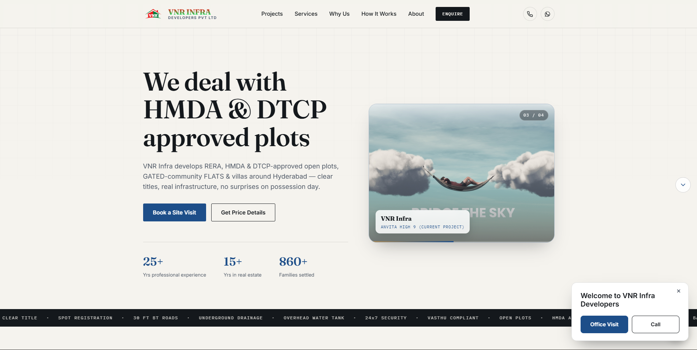
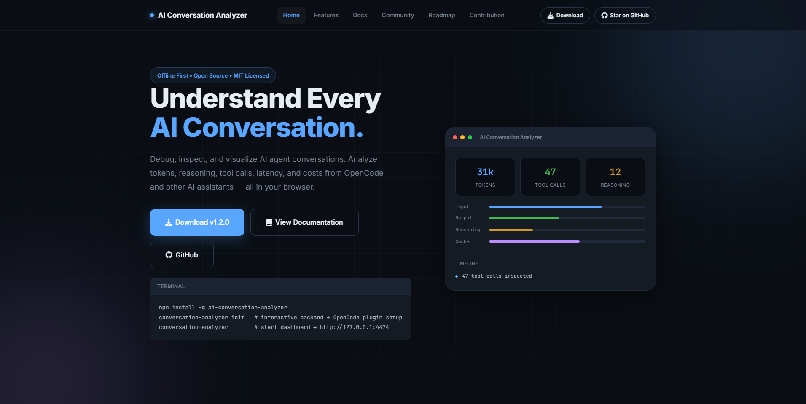

I build financial intelligence platforms and the systems behind them.
AI & ML graduate based in Hyderabad. I design and ship end-to-end products — from deep learning models to production RAG pipelines to client-facing websites.
About
01I'm an AI and Machine Learning graduate who likes taking systems from a model in a notebook to something people actually use — a chatbot answering real questions, a website a business relies on, a pipeline running in production.
My focus right now is MarketMind Hub, a white-label financial AI platform I'm building for Indian fintech startups, alongside client and personal projects spanning deep learning, data analysis, and web development.
- Based inHyderabad, India
- EducationB.E. CS (AI & ML), Parul University, 2025
- Currently buildingMarketMind Hub
- CertificationGoogle Cybersecurity Professional Cert.
- Open toAI/ML & Data roles, freelance builds
Skills
02Languages
- Python
- SQL
- JavaScript
- HTML / CSS
AI / ML
- Machine Learning
- Deep Learning
- CNN
- NLP
- Scikit-learn
Frameworks & Data
- TensorFlow / Keras
- Pandas / NumPy
- Feature Engineering
- Matplotlib / Seaborn
Backend & Tools
- FastAPI
- MongoDB
- FAISS (RAG)
- Git / GitHub
- Streamlit
Featured projects
03


screenshot
Experience
04AI, web, and software projects
Building MarketMind Hub end-to-end, alongside client and personal projects in deep learning and full-stack development.
Website design, development & maintenance
Designed and built a real-estate marketing website for a client, and maintain it on an ongoing basis.
Cybersecurity Intern
Analyzed security logs and network traffic with SIEM tools, supported vulnerability assessments and incident response, and documented findings.
Have a project in mind? Let's talk.
05I'm always up for building something useful — whether it's an AI product, a data pipeline, or a website a business can depend on.